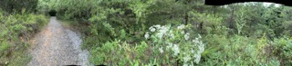
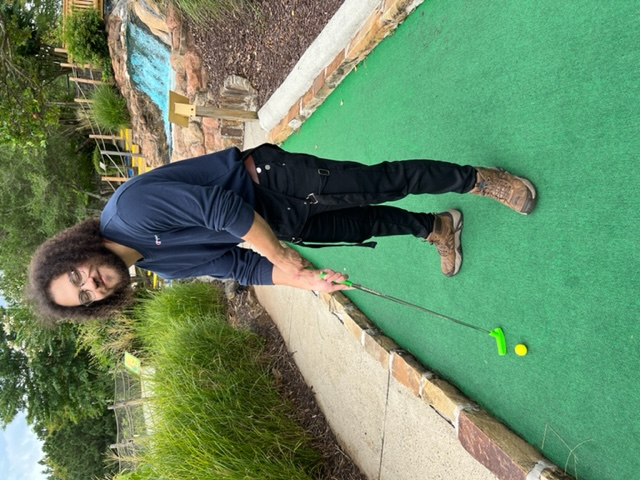
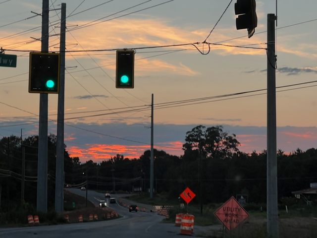

Music is a huge passion of mine, from keyboard chords to beat machines, I love it all! I've been producing music for 13 years, using various instruments and softwares. I love musical engineering and production, it is one of my favorite hobbies of all time. Here is a link to my soundcloud, Check out my music here:
https://soundcloud.com/sean-molezion

Pictures express so much about our character, personality and feelings. Whether you're a fan of the darker or lighter colors, all colors work together in perfect harmony to produce beautiful images and concepts. So much of life can be told, shared and explored via photography. Photography is such a fun social activity as well, The world is at your exposure! Experience the world, take chances and inspire!
Similar to photography, videography shares so many similar characteristics. Videography to me is photography on the go, or photography on the run. Other than videography being extremely adventurous and fun, it's a beautiful craft and skill to learn. The equipment is also great to learn about and it's a great feeling to put a finished project together using your ideas, videos, photos etc. The final outcome is worth working for.

Gaming, last but not least. I am pretty competitive, but playing video games, board games and physical games is pure excitement. Here is a picture of me playing minigolf, unfortunately I'm not the best minigolf player. I'll admit it, my girlfiend is way better than I expected in minigolf. She was humble and I was arrogant, I thought I would surely take the win. She beat me so badly, I probably deserved it. Anyways, it was a fun, humbling and exciting journey. I'll have to enroll in minigolf school so I can come back with a victory next time!
 